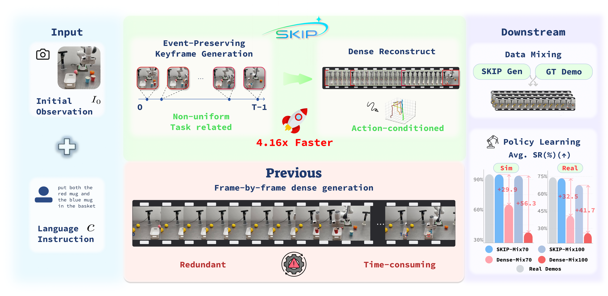
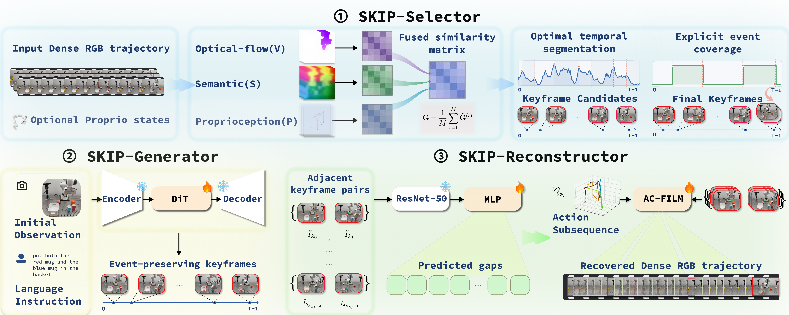

Event-preserving keyframe selection via multimodal fusion of visual flow, semantic change (DINOv3) and proprioception — with explicit gripper-event protection.
A sparse video diffusion model (Wan 2.2-TI2V-5B, fine-tuned) synthesizes only the selected keyframes from an initial frame + language prompt.
A learned gap predictor sets per-segment frame counts; an action-conditioned interpolator recovers the missing intervals from robot actions.

| Method | PSNR ↑ | SSIM ↑ | LPIPS ↓ | FVD ↓ |
|---|---|---|---|---|
| Wan 2.2 (chunked, dense baseline) | 21.423 | 0.832 | 0.162 | 4177 |
| Uniform + SKIP Gen./Recon. | 21.345 | 0.847 | 0.130 | 716 |
| RDP + SKIP Gen./Recon. | 21.076 | 0.843 | 0.137 | 724 |
| TriPSS + SKIP Gen./Recon. | 21.033 | 0.827 | 0.157 | 640 |
| SKIP (ours) | 21.635 | 0.856 | 0.119 | 458 |
| Suite | SKIP total (s/traj) ↓ | Wan 2.2 dense (s) ↓ | Speedup ↑ |
|---|---|---|---|
| LIBERO-10 | 39.79 | 243.86 | 6.13× |
| LIBERO-Goal | 37.73 | 144.66 | 3.83× |
| LIBERO-Object | 37.75 | 137.92 | 3.65× |
| LIBERO-Spatial | 36.64 | 124.74 | 3.40× |
| Weighted average | 37.86 | 157.37 | 4.16× |
| π₀.₅ training data | LIBERO-10 | Goal | Object | Spatial | Avg. |
|---|---|---|---|---|---|
| Real demos (all-real reference) | 90.1 | 96.5 | 96.3 | 97.9 | 95.2 |
| SKIP-Mix70 (30% real + 70% SKIP) | 89.6 | 96.6 | 96.0 | 97.5 | 94.9 |
| SKIP-Mix100 (100% SKIP) | 88.8 | 96.0 | 94.2 | 96.4 | 93.9 |
| Dense-Mix70 (30% real + 70% dense) | 68.5 | 67.7 | 60.6 | 59.4 | 64.1 |
| Dense-Mix100 (100% dense) | 35.5 | 38.6 | 37.2 | 36.6 | 37.0 |